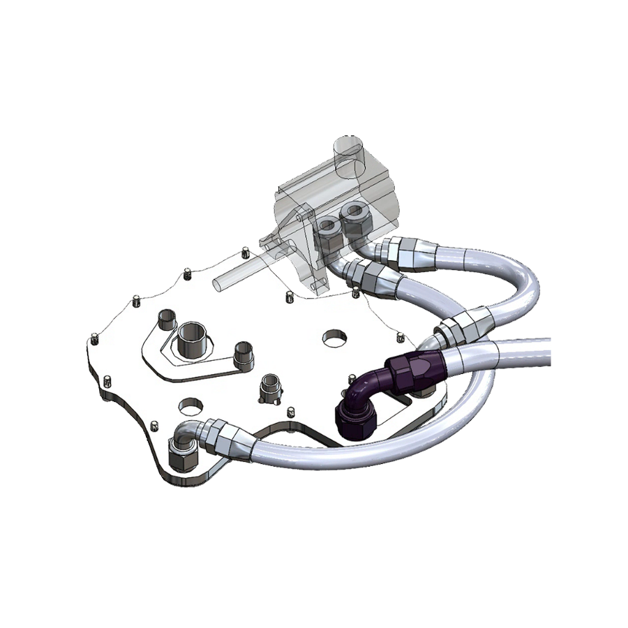
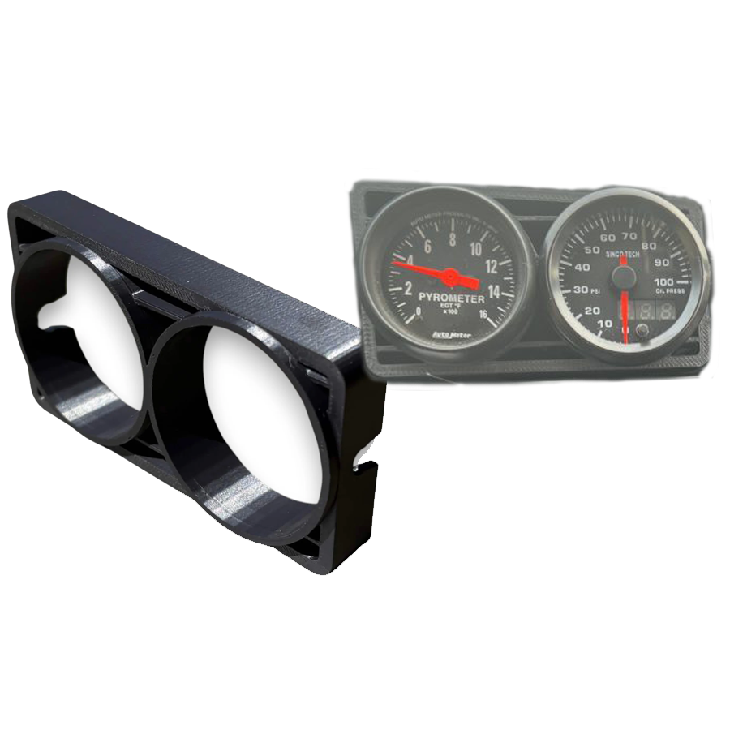
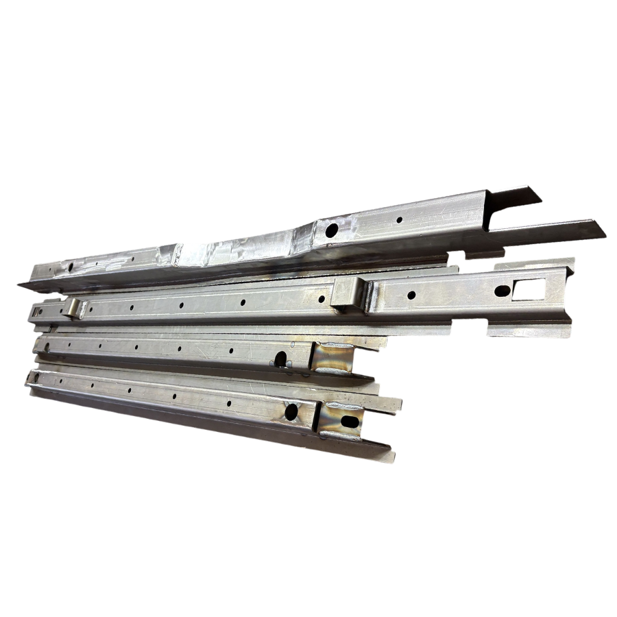
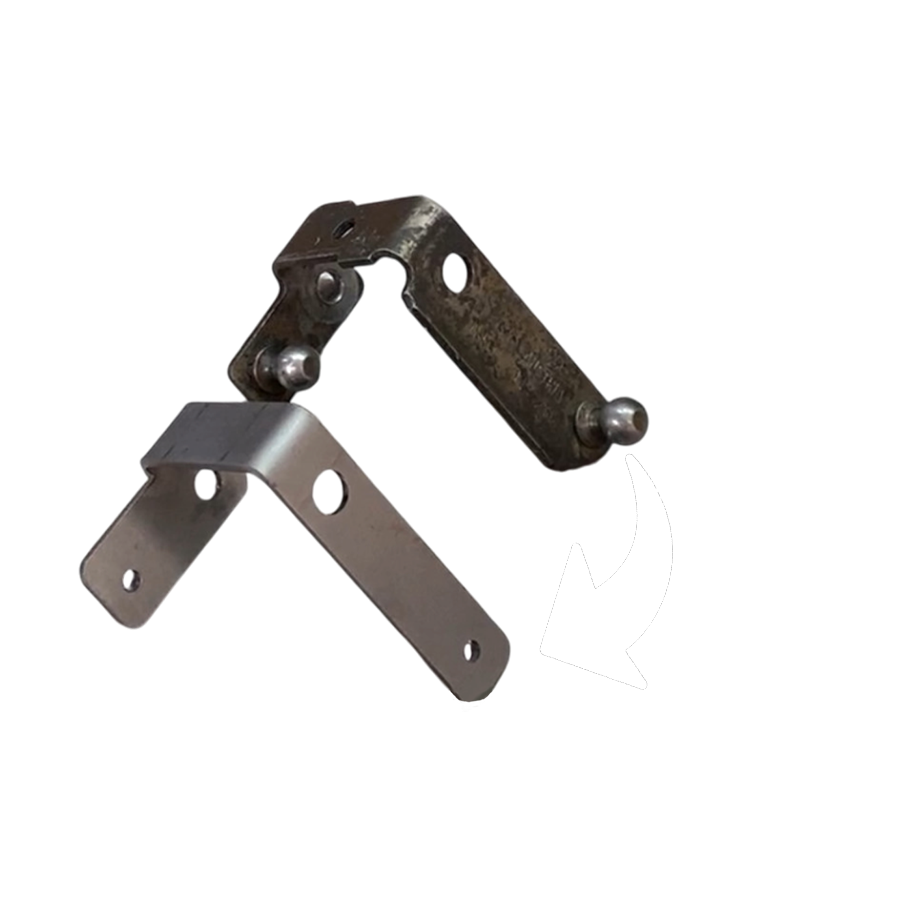
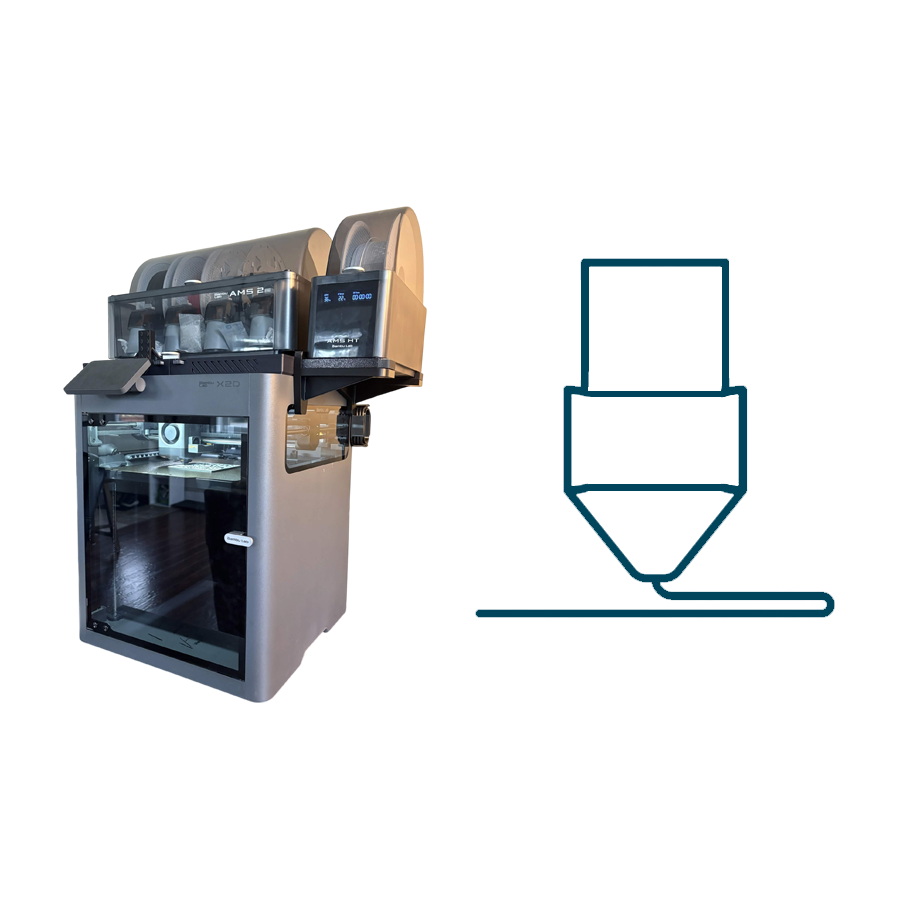
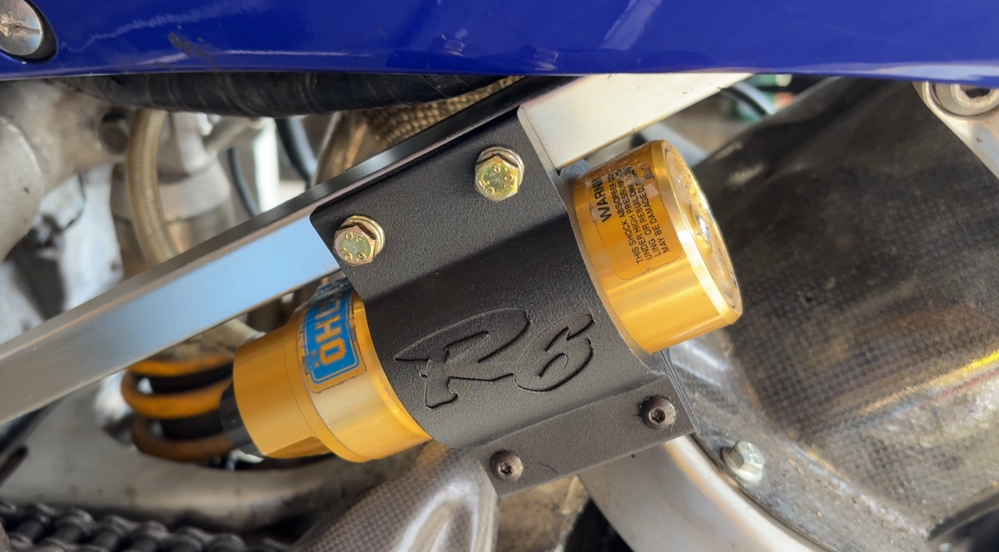
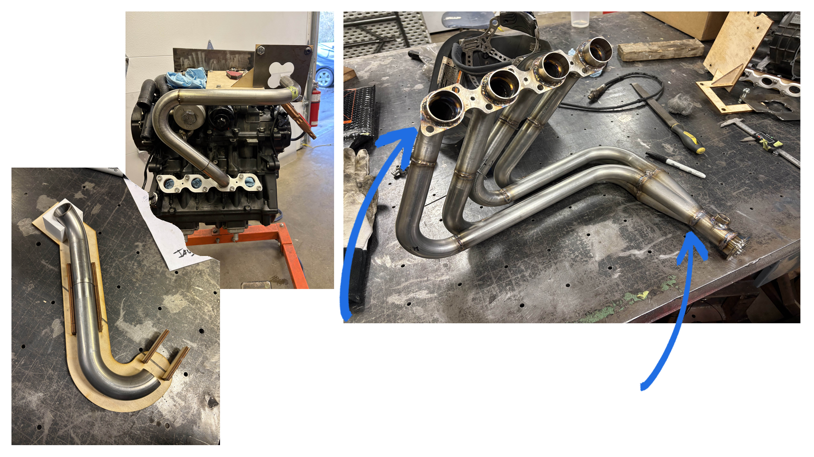
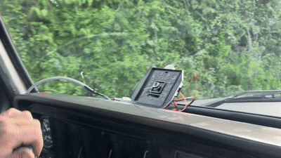

I turn ideas into functional, purpose-built components through mechanical design, prototyping, and modern manufacturing techniques. With a focus on automotive applications and an interest in solving unique design challenges across a variety of industries.
Discuss a Project →Practical design and manufacturing solutions, from custom components and product development to functional prototypes and production-ready parts.

Custom mechanical components, assemblies, and product designs developed around your requirements. From initial concepts and design modifications to detailed 3D models and manufacturing drawings.

In-house 3D printing for concept development, functional prototypes, and end-use components. Specializing in engineering-grade thermoplastics, including reinforced materials, for applications requiring strength, durability, and heat resistance.

Custom sheet metal components and assemblies designed for practical manufacturing. Brackets, enclosures, panels, mounts, and other fabricated components, with consideration for material selection, bends, tolerances, and manufacturability.

Recreating existing or discontinued components through dimensional measurement, CAD modelling, and design adaptation. Ideal for replacement parts, obsolete components, and modifications to existing products.

Having 3D printer issues? I'll work through troubleshooting steps, from the simplest fixes to more complex repairs. With 8+ years of experience across everything from custom Klipper systems to out-of-the-box Bambu machines, I can help diagnose problems, recommend repairs, and optimize print settings for difficult engineering-grade filaments.
A selection of engineering projects demonstrating design capabilities, manufacturing methods, and results.

Measured and modelled a split clamp to fix OHLINS damper reservoir on a 2001 Yamaha R6. High temperature and UV resistance for a track ready solution.

Equal length headers manufacturing. Turned a theoretical design into a real-world system. 3D printed, and laser cut fixtures to match mandrel bent tubes to a theoretical model.

Designed and installed a speedometer solution for a 1979 Ford F100 Truck that features a swapped powertrain. Converted the traditional mechanical speedometer to an electronic unit. Programmable for different drive ratios.
Understand the problem, requirements, and project goals.
Develop a practical solution.
Build, test, and refine the design.
Provide the finished product, files, or documentation.
Have a component that needs designing, a product idea, or an problem that needs solving? Get in touch and let's discuss it.
Start a Conversation → drawprintfab@gmail.com